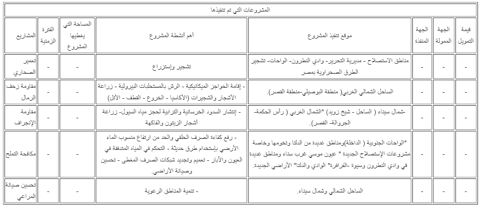

التصحر في مصر

ظاهرة التصحر في مصر هي ظاهرة جغرافية تعني انخفاض أو تدهور قدرة الإنتاج البيولوجي للأرض، مما قد يفضي في النهاية إلى خلق ظروف شبه صحراوية، أو بعبارة أخرى تدهور خصوبة أراضي منتجة سواء كانت مراعي أو مزارع تعتمد على الري المطري أو مزارع مروية، بأن تصبح أقل إنتاجية إلى حد كبير، أو ربما تفقد خصوبتها كليا.
أعلنت الأمم المتحدة في السبعينات أن مصر أولى دول العالم صحراويا نظرا للظروف القاسية التي تتميز بها الصحراء بها حيث تحتوى على حوالي 86% من الأراضي شديدة القحولة و14% أراضي قاحلة وتشكل مصر مساحة ما يقرب من مليون كيلومتر مربع في الركن الشمالي الشرقي لأفريقيا وهي جزء من حزام الصحراء الكبرى الممتد من المحيط الأطلسي شرقا عبر شمال أفريقيا بكاملها إلى الجزيرة العربية
مناخ مصر
يتأثر مناخ مصر بعدة عوامل أهمها الموقع ومظاهر السطح والنظام العام للضغط والمنخفضات الجوية والمسطحات المائية، حيث ساعد ذلك كله علي تقسيم مصر إلي عدة أقاليم مناخية متميزة فتقع مصر في الإقليم المداري الجاف فيما عدا الأطراف الشمالية التي تدخل في المنطقة المعتدلة الدفيئة التي تتمتع بمناخ شبيه بإقليم البحر المتوسط الذي يتميز بالحرارة والجفاف في أشهر الصيف وبالاعتدال في الشتاء مع سقوط أمطار قليلة تتزايد علي الساحل. مناخ مصر يمكن تمييزه في فصلين مناخيين هما فصل الصيف الجاف الحار ويمتد بين شهري مايو وأكتوبر وفصل الشتاء المعتدل قليل الأمطار ويمتد بين شهري نوفمبر وأبريل.

الطبيعة الجغرافية
الصحراء الغربية
تمتد الصحراء الغربية من وادي النيل غربا إلى الحدود مع ليبيا وتقدر مساحتها بنحو (681000 كيلومتر مربع ) وتعتبر في الأساس منطقة صحراوية شاسعة معظمها مكون من الصخور الرسوبية والكثبان الرملية ويوجد بها عدد من المنخفضات المغلقة أو شبه المغلقة من أهمها واحات الخارجة والداخلة والفرافرة والبحرية وواحة سيوه.
كما يوجد بها منخفض القطارة الذي يعد واحدا من أكبر واعمق المنخفضات الطبيعية في الصحراء الكبرى، حيث تتميز الصحراء الغربية عموما بالمناخ الجاف وقلة الموارد المائية والأمطار وبانتشار التربة الجبسية فقيرة المواد الغذائية والإنتاج مما يحصر مصادر المياه بها في الأمطار والآبار الجوفية والتي تستخدم في الشراب وفي الزراعة.
الصحراء الشرقية
تمتد الصحراء الشرقية من وادي النيل شرقا إلى البحر الأحمر وخليج السويس، وتتكون أساسا من سلسلة من الجبال المكونة من صخور القاعدة التي تتخللها شبكة من الوديان الرئيسية والفرعية التي تتجه أساسا إلى ساحل البحر الأحمر، حيث تتميز هذه المنطقة بالجبال العالية والهضاب والوديان وبالمناطق الساحلية الضيقة والمنبسطة والمناخ الجاف ومصادر الحياة بها لا تزيد عن المياه الجوفية أو الأمطار التي تتجمع في سيول جارفة تضيع معظمها في البحر الأحمر.
ويحدث عادة الإنجراف المائي نتيجة تجمع المياه والأمطار من المناطق المرتفعة ذات المساحات الكبيرة إلى الوديان المحدودة المساحة ذات الميول السريعة وفي اتجاه المناطق الساحلية المنخفضة وتضيع معظم هذه المياه في البحر الأحمر أو في قاع الوديان بعد تجريفها للتربة أثناء تحركها محملة المواد العضوية والعناصر الغذائية ويساعد على هذه العملية قلة وجود الغطاء النباتي وتعرضه للرعي الجائر والتآكل وبالتالي يجب العمل على الإستفادة من هذه المياه في الزراعة مع العمل على إعادة تأهيل الغطاء النباتي.
الوادي ودلتا النيل
تقع معظم المساحات الزراعية في مصر على امتداد وادي النيل ودلتا النيل والذي يبلغ مساحته ما يقرب من 1350 كيلومتر من حدود مصر مع السودان حتى ساحل البحر الأبيض المتوسط وتتميز هذه الأراضي بأنها تربة رسوبية خصبة تكونت منذ آلاف السنين نتيجة ضخ طمي النيل إليها القادم مع مياه نهر النيل. هذه الأراضي تعتمد في عمليات الري على مياه نهر النيل وهذه الأراضي قلوية بطبيعتها نتيجة لارتفاع نسبة الأملاح بها مع الظروف الجوية الحارة.
تتركز الزراعة في دلتا النيل ولكنها تتعرض لعمليات تجريف وتعرية متعددة نتيجة عمليات الري السطحي والري بالمياه المخلوطة بمياه الصرف الزراعي عالية الملوحة الذي يسبب عملية إغراق الأراضي بالمياه وحدوث ظاهرة التطبيل وخاصة مع الاستخدام المكثف للأسمدة الكيماوية والمبيدات وقلة تعويض التربة ما فقد منها من المادة العضوية عن طريق الأسمدة العضوية خاصة مع انقطاع طمي النيل بعد بناء السد العالي ومع غياب أيضاً الدورات الزراعية والتركيب المحصولي المناسب علاوة على تعرضها إلى عمليات التجريف بهدف استخدام الطبقة السطحية في صناعة الطوب الأحمر علاوة على تعرضها إلى عمليات البناء وعمليات الزحف مما يلزم الإتجاه إلى أساليب الري الحديثة والإقتصادية مع زراعة المحاصيل قليلة الشراهة للمياه والمحافظة على التنوع البيولوجي الزراعي التي تتميز به المنطقة والحد من عمليات الزحف العمراني والبناء على حساب التوسع الزراعي في مناطق من الدلتا مثل المنصورية والمريوطية.
المناطق الساحلية الشمالية
ومن أهم الصفات المناخية لهذه المنطقة هطول الأمطار الخريفية والشتوية بمعدلات تتراوح بين 100-250مم /سنة وهذه تمثل أعلى معدلات للأمطار في مصر، وتتناقص معدلات الأمطار بسرعة كلما اتجهنا إلى الجنوب خلال مسافة نحو 20 كم حيث تنخفض معدلات الأمطار بعدها إلى أقل من 50 مم/سنة وتتزايد الإرتفاعات عن سطح البحر كلما اتجهنا إلى الداخل كما في الساحل الشمالي الغربي لمرتفعات الهضبة الليبية التي يصل ارتفاعها إلى أكثر من 50 م فوق سطح البحر. وفي بعض المواقع تقترب الهضبة كثيراً من خط الساحل مما يجعل السهل الساحلي ضيقاً ومحدوداً، والصفات الطبيعية للمنطقة مع الصفات المناخية تؤدي إلى حركة نشطة للمياه السطحية حيث تتحرك من المرتفعات إلى الوديان والمناطق المنخفضة مما يؤدي إلى حدوث الإنجراف المائي للتربة من المرتفعات والسفوح إلى المنخفضات وغالبا تفقد هذه المياه في مياه البحر الأبيض المتوسط.
ويؤدي الإنجراف المائي إلى الترسيب والإطماء السريع للمواد المنجرفة في المنخفضات أو خزانات السدود وتتميز معظم أنواع التربة هنا بأنها أراضي رطبة وملحية وتربة رملية متوسطة القوام وتعتبر هذه المنطقة من المراعي الطبيعية الهامة في مصر وتقدر مساحتها بنحو 6.5 مليون فدان منها نحو 3.75 مليون فدان في الساحل الشمالي الغربي ونحو 2.85 مليون فدان في الساحل الشمالي لسيناء وأهم عوامل التدهور في هذه الأراضي هو عمليات الرعي الجائر وتآكل الغطاء النباتي بدرجات متفاوتة نتيجة لزيادة الحمولة الرعوية وزيادة عدد رؤوس الحيوانات عن قوة التحمل وأيضا تحويل مساحات كبيرة من الأراضي الرعوية الطبيعية إلى زراعات مطرية وبعلية والتي تعتبر من عوامل تدهور التربة بهذه المنطقة نظراً لفقد الغطاء النباتي الطبيعي لها ونظراً للقيام بعملية الحرث وإعداد الأرض للزراعة مع كونها أراضي هشة الصفات مما يزيد من تعرض التربة للإنجراف وانخفاض إنتاجيتها وضياع العائد الإقتصادي المرجو منها بعكس إذا استخدمت هذه الأراضي في تنمية المراعي الطبيعية وأحسنت إدارتها وبالتالي نتيجة لذلك يؤدي أيضا إلى هجرة البدو والسكان إلى المدن الكبيرة للحصول على فرص الرزق الأخرى مما يشكل عبئا إقتصاديًا أيضاً.
أسباب التصحر
- غزو الكثبان الرملية للأراضي الزراعية
- تدهور الأراضي الزراعية المعتمدة على الأمطار
- تملح التربة
- إزالة الغابات وتدمير النباتات الغابية
- إنخفاض كمية ونوعية المياه الجوفية والسطحية
- تدهور المراعي
- إنخفاض خصوبة الأراضي الزراعية
- إشتداد نشاط التعرية المائية والهوائية
- زيادة ترسبات السدود والأنهار
- إشتداد الزوابع الترابية وزيادة كمية الغبار في الجو.
مخاطر التصحر
التصحر يهدد الأمن الغذائي في مصر، فقد ذكرت إتفاقية الأمم المتحدة لمكافحة التصحر، أن مصر تفقد أراضي زراعية بمعدل خمسة أفدنة كل ساعة على مستوى المحافظات، مما جعل المنظمة الدولية تضع مصر بالمركز الأول عالمياً للتصحر. تعتبر المناطق البيئية الزراعية الصحراوية من أهم المناطق تعرضا لظاهرة التصحر، حيث تضم هذه المناطق النباتات الصحراوية التي تتناسب والظروف البيئية القاسية المتوفرة في هذه المناطق، كما تضم أيضا الصحاري الحقيقة الخالية من هذه النباتات أو من أي مجتمع نباتي آخر حيث لا تتوافر فيها الشروط البيئية المناسبة لحمايتها مثل الأمطار والتربة الزراعية، أيضا تتعرض هذه المناطق للرمال الزاحفة والمتنقلة والإنحرافات الهوائية والمائية والملوحة والعوارض المناخية المحددة لذلك.
مكافحة التصحر
المُـعضلة الأساسية التي تواجه الإنسانية هنا، هي فقر التربة. والعوامل المسببة لظاهرة التصحر، قهي عبارة عن مُـثلّث ذي ثلاثة أضلع، يتشكّل من التصحّر وانحسار التنوّع البيولوجي والتغيّر المناخي. هذه العوامل الثلاث، لابد أن تعالج في ترابط مع بعضها البعض. وبقدر ما يقع التقريب في وجهات النظر وتتكامل الدراسات حول هذه العوامل الثلاث، يكتمل الفهم لتلك القضايا. وفي سبيل إيجاد حلول تشمل هذه الإضلاع ينتج مفهوم الإدارة الشاملة قالب:Holistic Management
بالنسبة للتصحّر، العامل الرئيسي المُسبِّـب له، هو سوء استخدام الموارد من قِـبل الإنسان، مثل الرعي الجائر والتحطيب والحمولة الرعوية الزائدة، وجميعها تدخل ضمن سوء الإدارة، وكل أرض في كل مكان، لابد أن يكون لها نظام عِـلمي سليم، لإدارة الموارد فيها. ومكافحة هذه الظاهرة، تبدأ في المقام الأوّل بحسن إدارة الموارد. وأما عامل التغيّرات المناخية، فالمطلوب ليس مكافحته، بل التأقلم والتكيّف معه. هذه العوامل لابد أن تفهم سويا، لكي يمكن تخفيف أثرها على الإنسان والحيوان وبقية الكائنات.
البرنامج الوطني لمكافحة التصحر
تضمن البرنامج الوطني المصري لمكافحة التصحر خمسة برامج رئيسية ينبثق منها عدة مشروعات لمكافحة التصحر بالأقاليم الزراعية:
برامح أساسية وتشمل:
- تقييم ومتابعة التصحر وبناء القدرات
- برامج تحسين المراعيو تشمل: إعادة تأهيل أراضي المراعي المتدهورة وصيانة موارد الأراضي والمياه و إدارة المراعي الطبيعية
- برامج تثبيت الكثبان الرملية و تشمل: حماية شواطئ بحيرة ناصر من الكثبان الرملية و تثبيت الكثبان الرملية في واحة سيوة و تثبيت الكثبان الرملية في شمال سيناء
- برامج الزراعة المروية و تشمل: تحسين وتطوير طرق الري والإداراة المتكاملة لمشروعات الري وإدارة و تحسين الأراضي ومعالجة تلوث التربة والمياه و معالجة التلوث البيئي في منخفض وادي الريان
- برامج الزراعة المطرية و تشمل: تخطيط إستخدامات الأراضي في الساحل الشمالي و تحسين الثروة الحيوانية وتحسين إنتاجية المجترات الصغيرة في شمال سيناء و الحد من إنجراف التربة.
أهم مشاريع مكافحة التصحر

استراتيجيات مكافحة التصحر
- حماية نوعية المياه: مراقبة المسطحات المائية المغلقة مثل البحيرات للحفاظ على التوازن البيئى.
- صيانة المجارى المائية ميكانيكيا.
- التوسع في المقاومة البيولوجية للآفات لتجنب التلوث الكيماوى.
- الاهتمام بالأصول البيئية للمجارى المائية ورصد تلوثها.
- مكافحة جميع صور التلوث الأخرى والتي تهدد بتلوث المياه.
- تدعيم وتحديث معامل التحاليل لمواكبة جودة المياه.
- دعم المؤسسات البيئية الغير حكومية في حماية المجارى المائية.
- إلزام الشركات الصناعية بعمل الدراسات الجدوى لاستكمال البيانات الخاصة بمخلفاتها.
- التشديد على عدم صرف مخلفات المصانع والصرف الصحى للمدن على المسطحات المائية قبل معالجتها.
- مراقبة ورصد السواحل الشمالية والشرقية من مخلفات السفن والصرف الصحي من المنتجعات السياحية.
- استعمال الموارد نظم حصاد مياه الأمطار في الزراعة المصرية.
- التو سع في استخدامات المياه الغير تقليدية لزيادة الموارد المائية، مياه الصرف، مياه الصرف الصحى بعد معالجتها.
- زراعة الغابات الخشبية بمياه الصرف الصحى المعالج ابتدائى.
- التوسع في استصلاح الأراضي في مصر.
- الاستخدام الأمثل للموارد المائية السطحية والجوفية بنظم الرى الحديثة.
- تطوير الرى السطحى لتقليل فوائد الشبكة.
- تقليل المساحات المنزرعة أرز وقصب السكر.
- مكافحة التدهور البيئى في الأراضي الخصبة بوادى النيل.
- إدارة الأراضي والمياه في الحقل لتعزيز الطاقة الإنتاجية الزراعية.
تشريعات حماية البيئة
التشريعات الوطنية لحماية البيئة
تشريعات حماية التربة:
- في حماية الأرض الزراعية والنبات من التلوث والتدهور (الحجر الزراعى)
- في المكافحة الشاملة للآفات الزراعية الضارة بالمحاصيل.
- في تحسين وصيانة الأراضي الزراعية.
- في حماية الأرض الزراعية من التبوير والبناء عليها .
- في تشريعات التلوث بالمبيدات الكيماويه والمخصبات الزراعية.
التشريعات الدولية لحماية البيئة
في عام 1994 وقعت مصر اتفاقية الأمم المتحدة لمكافحة التصحر (UNCCD) على أن تكون وزارة الزراعة وإستصلاح الأراضي هي المنوطة بتنفبذ الإتفاقية وأن يكون مركز بحوث الصحراء هو المنسق الوطني للإتفاقية.